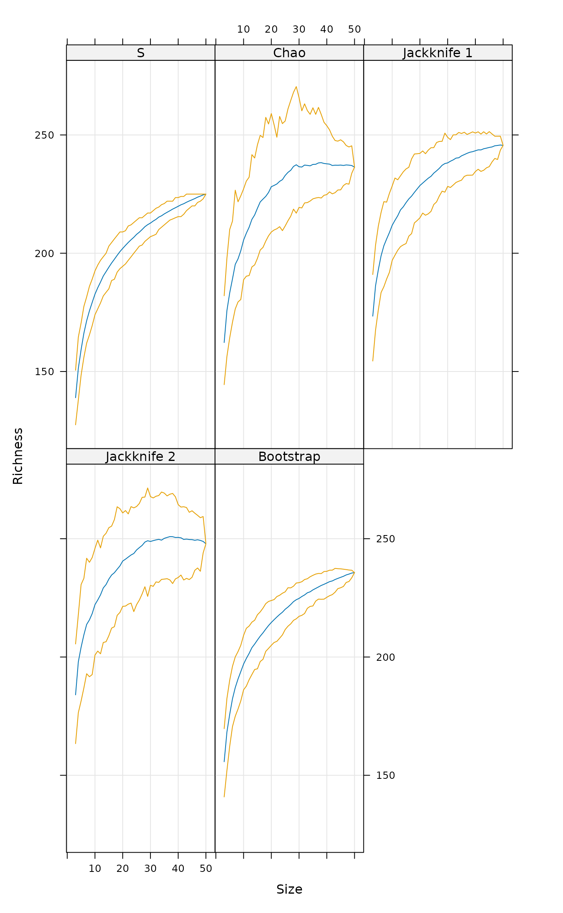
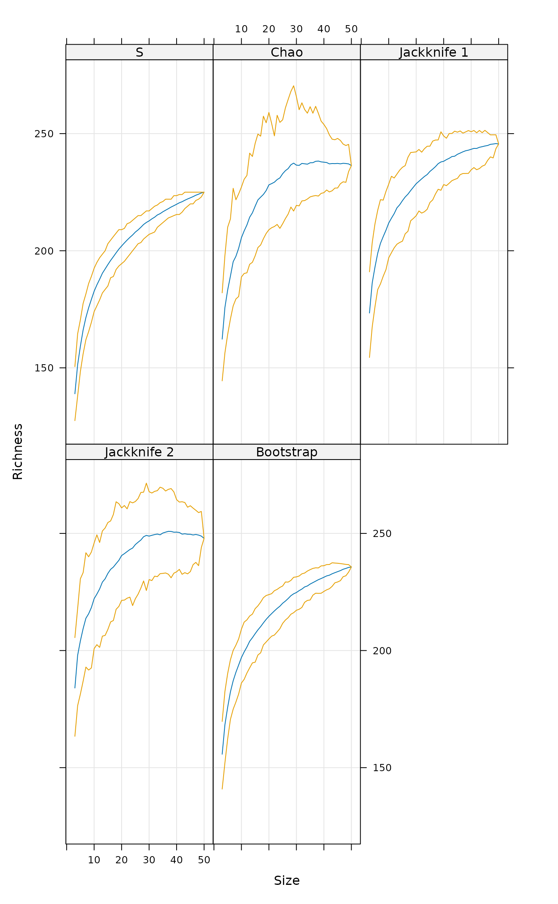

Extrapolated Species Richness in a Species Pool
specpool.RdThe functions estimate the extrapolated species richness in a species
pool, or the number of unobserved species. Function specpool
is based on incidences in sample sites, and gives a single estimate
for a collection of sample sites (matrix). Function estimateR
is based on abundances (counts) on single sample site.
Usage
specpool(x, pool, smallsample = TRUE)
estimateR(x, ...)
specpool2vect(X, index = c("jack1","jack2", "chao", "boot","Species"))
poolaccum(x, permutations = 100, minsize = 3)
estaccumR(x, permutations = 100, parallel = getOption("mc.cores"))
# S3 method for class 'poolaccum'
summary(object, display, alpha = 0.05, ...)
# S3 method for class 'poolaccum'
plot(x, alpha = 0.05, type = c("l","g"), ...)Arguments
- x
Data frame or matrix with species data or the analysis result for
plotfunction.- pool
A vector giving a classification for pooling the sites in the species data. If missing, all sites are pooled together.
- smallsample
Use small sample correction \((N-1)/N\), where \(N\) is the number of sites within the
pool.- X, object
A
specpoolresult object.- index
The selected index of extrapolated richness.
- permutations
Usually an integer giving the number permutations, but can also be a list of control values for the permutations as returned by the function
how, or a permutation matrix where each row gives the permuted indices.- minsize
Smallest number of sampling units reported.
- parallel
Number of parallel processes or a predefined socket cluster. With
parallel = 1uses ordinary, non-parallel processing. The parallel processing is done with parallel package.- display
Indices to be displayed.
- alpha
Level of quantiles shown. This proportion will be left outside symmetric limits.
- type
Type of graph produced in
xyplot.- ...
Other parameters (not used).
Details
Many species will always remain unseen or undetected in a collection of sample plots. The function uses some popular ways of estimating the number of these unseen species and adding them to the observed species richness (Palmer 1990, Colwell & Coddington 1994).
The incidence-based estimates in specpool use the frequencies
of species in a collection of sites.
In the following, \(S_P\) is the extrapolated richness in a pool,
\(S_0\) is the observed number of species in the
collection, \(a_1\) and \(a_2\) are the number of species
occurring only in one or only in two sites in the collection, \(p_i\)
is the frequency of species \(i\), and \(N\) is the number of
sites in the collection. The variants of extrapolated richness in
specpool are:
| Chao | \(S_P = S_0 + \frac{a_1^2}{2 a_2}\frac{N-1}{N}\) |
| Chao bias-corrected | \(S_P = S_0 + \frac{a_1(a_1-1)}{2(a_2+1)} \frac{N-1}{N}\) |
| First order jackknife | \(S_P = S_0 + a_1 \frac{N-1}{N}\) |
| Second order jackknife | \(S_P = S_0 + a_1 \frac{2N - 3}{N} - a_2 \frac{(N-2)^2}{N (N-1)}\) |
| Bootstrap | \(S_P = S_0 + \sum_{i=1}^{S_0} (1 - p_i)^N\) |
specpool normally uses basic Chao equation, but when there
are no doubletons (\(a2=0\)) it switches to bias-corrected
version. In that case the Chao equation simplifies to
\(S_0 + \frac{1}{2} a_1 (a_1-1) \frac{N-1}{N}\).
The abundance-based estimates in estimateR use counts
(numbers of individuals) of species in a single site. If called for
a matrix or data frame, the function will give separate estimates
for each site. The two variants of extrapolated richness in
estimateR are bias-corrected Chao and ACE (O'Hara 2005, Chiu
et al. 2014). The Chao estimate is similar as the bias corrected
one above, but \(a_i\) refers to the number of species with
abundance \(i\) instead of number of sites, and the small-sample
correction is not used. The ACE estimate is defined as:
| ACE | \(S_P = S_{abund} + \frac{S_{rare}}{C_{ace}}+ \frac{a_1}{C_{ace}} \gamma^2_{ace}\) |
| where | \(C_{ace} = 1 - \frac{a_1}{N_{rare}}\) |
| \(\gamma^2_{ace} = \max \left[ \frac{S_{rare} \sum_{i=1}^{10} i(i-1)a_i}{C_{ace} N_{rare} (N_{rare} - 1)}-1, 0 \right]\) |
Here \(a_i\) refers to number of species with abundance \(i\) and \(S_{rare}\) is the number of rare species, \(S_{abund}\) is the number of abundant species, with an arbitrary threshold of abundance 10 for rare species, and \(N_{rare}\) is the number of individuals in rare species.
Functions estimate the standard errors of the estimates. These only
concern the number of added species, and assume that there is no
variance in the observed richness. The equations of standard errors
are too complicated to be reproduced in this help page, but they can
be studied in the R source code of the function and are discussed
in the vignette that can be read with the
browseVignettes("vegan"). The standard error are based on the
following sources: Chiu et al. (2014) for the Chao estimates and
Smith and van Belle (1984) for the first-order Jackknife and the
bootstrap (second-order jackknife is still missing). For the
variance estimator of \(S_{ace}\) see O'Hara (2005).
Functions poolaccum and estaccumR are similar to
specaccum, but estimate extrapolated richness indices
of specpool or estimateR in addition to number of
species for random ordering of sampling units. Function
specpool uses presence data and estaccumR count
data. The functions share summary and plot
methods. The summary returns quantile envelopes of
permutations corresponding the given level of alpha and
standard deviation of permutations for each sample size. NB., these
are not based on standard deviations estimated within specpool
or estimateR, but they are based on permutations. The
plot function shows the mean and envelope of permutations
with given alpha for models. The selection of models can be
restricted and order changes using the display argument in
summary or plot. For configuration of plot
command, see xyplot.
Value
Function specpool returns a data frame with entries for
observed richness and each of the indices for each class in
pool vector. The utility function specpool2vect maps
the pooled values into a vector giving the value of selected
index for each original site. Function estimateR
returns the estimates and their standard errors for each
site. Functions poolaccum and estimateR return
matrices of permutation results for each richness estimator, the
vector of sample sizes and a table of means of permutations
for each estimator.
References
Chao, A. (1987). Estimating the population size for capture-recapture data with unequal catchability. Biometrics 43, 783–791.
Chiu, C.H., Wang, Y.T., Walther, B.A. & Chao, A. (2014). Improved nonparametric lower bound of species richness via a modified Good-Turing frequency formula. Biometrics 70, 671–682.
Colwell, R.K. & Coddington, J.A. (1994). Estimating terrestrial biodiversity through extrapolation. Phil. Trans. Roy. Soc. London B 345, 101–118.
O'Hara, R.B. (2005). Species richness estimators: how many species can dance on the head of a pin? J. Anim. Ecol. 74, 375–386.
Palmer, M.W. (1990). The estimation of species richness by extrapolation. Ecology 71, 1195–1198.
Smith, E.P & van Belle, G. (1984). Nonparametric estimation of species richness. Biometrics 40, 119–129.
Note
The functions are based on assumption that there is a species pool: The community is closed so that there is a fixed pool size \(S_P\). In general, the functions give only the lower limit of species richness: the real richness is \(S >= S_P\), and there is a consistent bias in the estimates. Even the bias-correction in Chao only reduces the bias, but does not remove it completely (Chiu et al. 2014).
Optional small sample correction was added to specpool in
vegan 2.2-0. It was not used in the older literature (Chao
1987), but it is recommended recently (Chiu et al. 2014).
Examples
data(dune)
data(dune.env)
pool <- with(dune.env, specpool(dune, Management))
pool
#> Species chao chao.se jack1 jack1.se jack2 boot boot.se n
#> BF 16 17.19048 1.5895675 19.33333 2.211083 19.83333 17.74074 1.646379 3
#> HF 21 21.51429 0.9511693 23.40000 1.876166 22.05000 22.56864 1.821518 5
#> NM 21 22.87500 2.1582871 26.00000 3.291403 25.73333 23.77696 2.300982 6
#> SF 21 29.88889 8.6447967 27.66667 3.496029 31.40000 23.99496 1.850288 6
op <- par(mfrow=c(1,2))
boxplot(specnumber(dune) ~ Management, data = dune.env,
col = "hotpink", border = "cyan3")
boxplot(specnumber(dune)/specpool2vect(pool) ~ Management,
data = dune.env, col = "hotpink", border = "cyan3")
 par(op)
data(BCI)
## Accumulation model
pool <- poolaccum(BCI)
summary(pool, display = "chao")
#> $chao
#> N Chao 2.5% 97.5% Std.Dev
#> [1,] 3 162.2735 144.4502 187.5332 11.565496
#> [2,] 4 176.4063 153.8675 198.2631 12.089374
#> [3,] 5 184.0546 159.8635 213.3850 13.740305
#> [4,] 6 189.9404 171.6428 214.8908 12.304810
#> [5,] 7 195.4193 177.0344 226.4467 12.879539
#> [6,] 8 199.2258 179.6281 227.8784 12.006450
#> [7,] 9 203.2766 181.3366 227.9547 11.943144
#> [8,] 10 207.2661 188.9384 237.1717 12.893963
#> [9,] 11 210.1025 190.4101 232.4489 12.383670
#> [10,] 12 212.0704 191.8712 236.2489 11.649082
#> [11,] 13 215.2151 196.1468 240.5178 11.675552
#> [12,] 14 217.2950 195.9684 244.5694 12.238504
#> [13,] 15 219.3033 197.8400 247.8678 11.658476
#> [14,] 16 220.8875 201.2034 244.6145 12.524488
#> [15,] 17 222.5357 202.5397 244.9529 13.252401
#> [16,] 18 224.7259 206.9428 251.1893 12.513074
#> [17,] 19 225.1437 207.9490 251.9407 11.455160
#> [18,] 20 226.3985 210.3875 251.1660 10.332223
#> [19,] 21 227.7990 210.7558 254.1286 11.385651
#> [20,] 22 229.2317 211.1644 251.0021 11.223656
#> [21,] 23 230.3057 211.7931 251.2021 10.882809
#> [22,] 24 231.7938 209.5530 257.3639 11.100530
#> [23,] 25 233.3289 210.6458 259.0122 11.438090
#> [24,] 26 233.4884 212.2681 257.9095 11.005428
#> [25,] 27 234.5522 214.6466 253.9270 10.439950
#> [26,] 28 235.4450 219.8658 256.8282 10.814083
#> [27,] 29 236.3830 218.9427 258.6093 11.199283
#> [28,] 30 236.4444 219.3734 262.1411 11.787211
#> [29,] 31 236.5250 219.9990 266.7570 10.801593
#> [30,] 32 237.3289 220.6262 262.8832 12.746605
#> [31,] 33 236.9285 221.4075 263.9025 10.876241
#> [32,] 34 236.7118 221.8794 258.0257 10.515572
#> [33,] 35 237.1499 222.6626 259.8105 9.959584
#> [34,] 36 237.0836 222.8639 255.8536 8.662479
#> [35,] 37 237.1953 222.5738 256.7784 8.903537
#> [36,] 38 237.6161 222.9078 255.5105 8.851169
#> [37,] 39 237.5296 224.1699 255.3324 8.429272
#> [38,] 40 237.3997 224.7824 252.3392 7.553769
#> [39,] 41 237.4912 225.5095 250.9073 7.081389
#> [40,] 42 237.4198 225.0633 249.9428 6.692340
#> [41,] 43 237.4887 225.1320 248.7678 6.258701
#> [42,] 44 237.5685 226.0341 249.1133 5.761397
#> [43,] 45 237.0493 226.6106 248.4222 5.456563
#> [44,] 46 236.6963 227.9139 247.5233 4.882243
#> [45,] 47 236.9680 228.3353 244.9151 4.251540
#> [46,] 48 237.0710 229.2102 245.3993 3.612062
#> [47,] 49 236.9680 231.3403 245.4082 3.208175
#> [48,] 50 236.3732 236.3732 236.3732 0.000000
#>
#> attr(,"class")
#> [1] "summary.poolaccum"
plot(pool)

## Quantitative model
estimateR(BCI[1:5,])
#> 1 2 3 4 5
#> S.obs 93.000000 84.000000 90.000000 94.000000 101.000000
#> S.chao1 117.473684 117.214286 141.230769 111.550000 136.000000
#> se.chao1 11.583785 15.918953 23.001405 8.919663 15.467344
#> S.ACE 122.848959 117.317307 134.669844 118.729941 137.114088
#> se.ACE 5.736054 5.571998 6.191618 5.367571 5.848474
par(op)
data(BCI)
## Accumulation model
pool <- poolaccum(BCI)
summary(pool, display = "chao")
#> $chao
#> N Chao 2.5% 97.5% Std.Dev
#> [1,] 3 162.2735 144.4502 187.5332 11.565496
#> [2,] 4 176.4063 153.8675 198.2631 12.089374
#> [3,] 5 184.0546 159.8635 213.3850 13.740305
#> [4,] 6 189.9404 171.6428 214.8908 12.304810
#> [5,] 7 195.4193 177.0344 226.4467 12.879539
#> [6,] 8 199.2258 179.6281 227.8784 12.006450
#> [7,] 9 203.2766 181.3366 227.9547 11.943144
#> [8,] 10 207.2661 188.9384 237.1717 12.893963
#> [9,] 11 210.1025 190.4101 232.4489 12.383670
#> [10,] 12 212.0704 191.8712 236.2489 11.649082
#> [11,] 13 215.2151 196.1468 240.5178 11.675552
#> [12,] 14 217.2950 195.9684 244.5694 12.238504
#> [13,] 15 219.3033 197.8400 247.8678 11.658476
#> [14,] 16 220.8875 201.2034 244.6145 12.524488
#> [15,] 17 222.5357 202.5397 244.9529 13.252401
#> [16,] 18 224.7259 206.9428 251.1893 12.513074
#> [17,] 19 225.1437 207.9490 251.9407 11.455160
#> [18,] 20 226.3985 210.3875 251.1660 10.332223
#> [19,] 21 227.7990 210.7558 254.1286 11.385651
#> [20,] 22 229.2317 211.1644 251.0021 11.223656
#> [21,] 23 230.3057 211.7931 251.2021 10.882809
#> [22,] 24 231.7938 209.5530 257.3639 11.100530
#> [23,] 25 233.3289 210.6458 259.0122 11.438090
#> [24,] 26 233.4884 212.2681 257.9095 11.005428
#> [25,] 27 234.5522 214.6466 253.9270 10.439950
#> [26,] 28 235.4450 219.8658 256.8282 10.814083
#> [27,] 29 236.3830 218.9427 258.6093 11.199283
#> [28,] 30 236.4444 219.3734 262.1411 11.787211
#> [29,] 31 236.5250 219.9990 266.7570 10.801593
#> [30,] 32 237.3289 220.6262 262.8832 12.746605
#> [31,] 33 236.9285 221.4075 263.9025 10.876241
#> [32,] 34 236.7118 221.8794 258.0257 10.515572
#> [33,] 35 237.1499 222.6626 259.8105 9.959584
#> [34,] 36 237.0836 222.8639 255.8536 8.662479
#> [35,] 37 237.1953 222.5738 256.7784 8.903537
#> [36,] 38 237.6161 222.9078 255.5105 8.851169
#> [37,] 39 237.5296 224.1699 255.3324 8.429272
#> [38,] 40 237.3997 224.7824 252.3392 7.553769
#> [39,] 41 237.4912 225.5095 250.9073 7.081389
#> [40,] 42 237.4198 225.0633 249.9428 6.692340
#> [41,] 43 237.4887 225.1320 248.7678 6.258701
#> [42,] 44 237.5685 226.0341 249.1133 5.761397
#> [43,] 45 237.0493 226.6106 248.4222 5.456563
#> [44,] 46 236.6963 227.9139 247.5233 4.882243
#> [45,] 47 236.9680 228.3353 244.9151 4.251540
#> [46,] 48 237.0710 229.2102 245.3993 3.612062
#> [47,] 49 236.9680 231.3403 245.4082 3.208175
#> [48,] 50 236.3732 236.3732 236.3732 0.000000
#>
#> attr(,"class")
#> [1] "summary.poolaccum"
plot(pool)

## Quantitative model
estimateR(BCI[1:5,])
#> 1 2 3 4 5
#> S.obs 93.000000 84.000000 90.000000 94.000000 101.000000
#> S.chao1 117.473684 117.214286 141.230769 111.550000 136.000000
#> se.chao1 11.583785 15.918953 23.001405 8.919663 15.467344
#> S.ACE 122.848959 117.317307 134.669844 118.729941 137.114088
#> se.ACE 5.736054 5.571998 6.191618 5.367571 5.848474